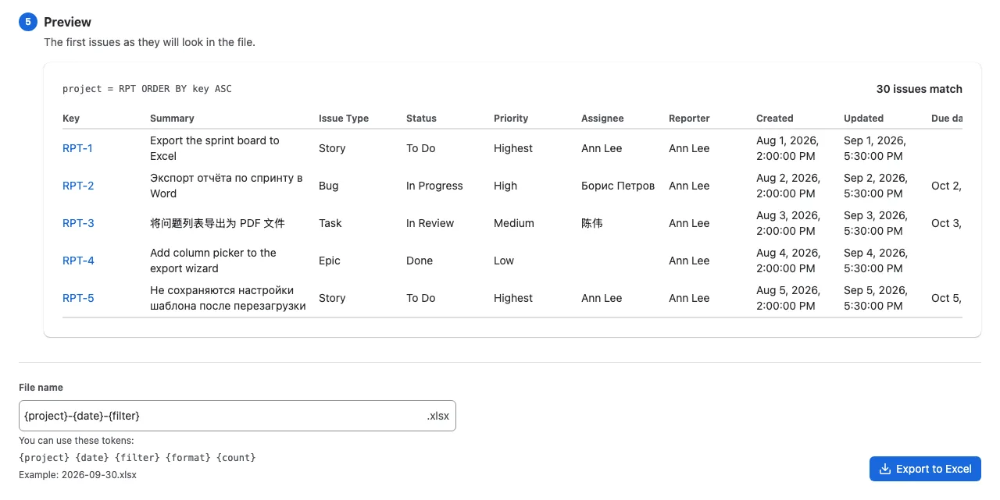
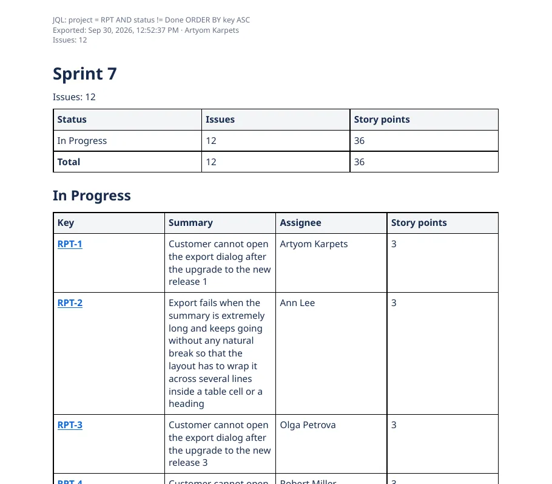

ArtUp Reports for Jira Cloud
Jira issues to Excel, Word and PDF
Export issues from a search, a board, a sprint or a single issue as a real .xlsx, .docx or PDF file. Choose Excel columns with the mouse, or fill a Word template you made in Word — no code. The file is built in your browser, so your issue data stays with Atlassian.
- Runs on Atlassian
- Free for up to 10 users
- Excel · Word · PDF
- 26 languages, light and dark

Built for reports people actually send
Jira's own export is CSV. ArtUp Reports gives you the formatted files that go into an inbox, a review or a customer folder.
Real spreadsheets, not text in cells
Choose any fields as columns and reorder them with the mouse. Dates are dates, numbers are numbers and issue keys are links.
- Frozen header, header filters and column widths that fit the data.
- One row per issue, work log or comment; sheets split by a field.
- A Summary sheet with counts by status, assignee and priority, and the JQL, time, author and issue count.
- A preview of the first issues before you export.

Layouts, and templates you make in Word
Four built-in layouts — single issue, issue list, sprint report and release notes — for Word and PDF, on A4 or Letter. Or upload your own .docx and write {{summary}} where the summary should go.
- No scripting language. A mistyped placeholder is caught when you upload the template.
- Images from descriptions and attachments sit inside the document.
- Table headers repeat on every page; page numbers in the footer; JQL, time, author and issue count at the top.
- PDF fonts for Latin, Cyrillic and CJK text are bundled.

Save it once, reuse it everywhere
Save Excel column sets and Word templates as personal, project or site templates. Project templates are visible to the people who can use that project. File names follow a pattern you set, such as {project}-{date}-{filter}.

How it works
Start from where you already work in Jira.
- Open an export.
From the issue search (Apps menu), a board, backlog or sprint, an issue, or the ArtUp Reports page in the Apps menu.
- Choose issues, format and template.
A saved filter or JQL; Excel, Word or PDF; a built-in layout or one of your templates.
- Download.
The file is built in your browser. The result screen shows the number of issues, the time, skipped issues and missing images, and lists every warning.
Every gap is on the list
If a column does not exist on your site, an image cannot be read or Jira does not answer, the result screen says so. A file built from an incomplete read is marked as partial in its name and with a banner; it is never presented as complete.

Your issues never leave Atlassian and your browser
ArtUp Reports reads Jira with your permissions and builds the file in your browser. There are no ArtUp Labs servers in the path.
- Runs on AtlassianNo external servers and no egress.
- No issue content storedThe app's storage holds only your templates: names, settings and the .docx files you upload.
- Your permissionsIssues you cannot see in Jira are not exported.
- Read-onlyThe app never writes to Jira.
- 10,003 issues in 11.8 secondsAn Excel export on a test site, read back to confirm 10,003 rows and 10,003 links.1
- 500 issues with images in one to one and a half minutesWord 58–80 seconds, PDF 57–72 seconds across runs; no image lost.1
Free for up to 10 users
Larger sites subscribe per user through the Atlassian Marketplace, billed by Atlassian with your other apps. Start a free trial from Jira's Apps menu.